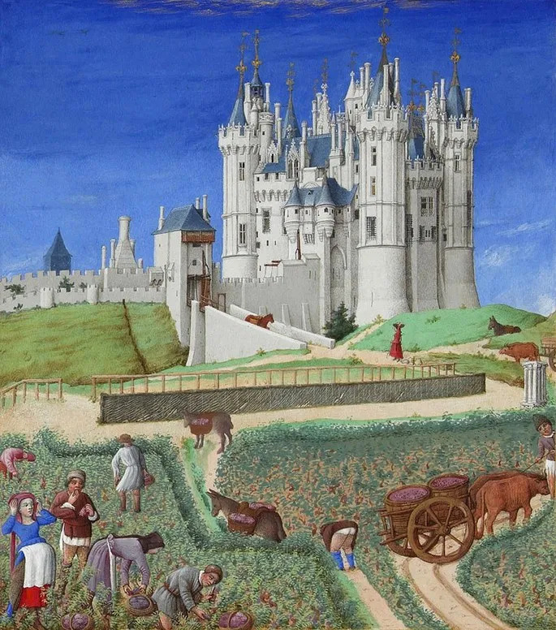

A Idade Média é o nome do período da história localizado entre os anos 476 e 1453. A nomeação “Idade Média” é utilizada pelos historiadores
dentro de uma periodização que engloba quatro idades: Antiga, Média, Moderna e Contemporânea.
"A Idade Média iniciou-se com a desagregação do Império Romano do Ocidente, no século V. Isso deu início a um processo de mescla da cultura latina, oriunda dos romanos, e da cultura germânica, oriunda dos povos que invadiram e instalaram-se nas terras que pertenciam a Roma, na Europa Ocidental.
Feudalismo

O feudalismo foi a forma de organização social e econômica instituída na Europa Ocidental entre os séculos V a XV, durante a Idade Média. Baseava-se em grandes propriedades de terra, chamadas de feudos, que pertenciam aos senhores feudais, e a mão de obra era servil.
Com a queda do Império Romano do Ocidente e a invasão dos povos bárbaros entre os séculos IV e V, a Europa atravessou um período de ruralização, isto é, os moradores da cidade se deslocaram para o campo, fugindo da instabilidade provocada pela movimentação dos bárbaros.
Alta Idade Média
De maneira geral, a Alta Idade Média é caracterizada pelas invasões bárbaras ao Império Romano, que provocaram sua fragmentação política e territorial. Os constantes conflitos provocaram o declínio das cidades e o crescente povoamento de áreas rurais que dariam origem, alguns séculos depois, aos feudos.
Esse processo resultou em novos modelos de sociedade, no fim de uma estrutura política centralizada, e no fortalecimento da Igreja Católica, que era uma grande proprietária de terras.
Baixa Idade Média
A Baixa Idade Média, por sua vez, se estendeu dos séculos XI ao XV, e representou o período de decadência da sociedade feudal na Europa Ocidental.
Nesse momento, há um renascimento urbano, ou seja, das cidades, baseado principalmente no crescimento comercial e marcado pela ascensão da burguesia, camada social ligada ao comércio. É também um período de centralização política, consolidado pelo enfraquecimento dos feudos e pela formação dos Estados nacionais.
As Invasões Bárbaras
As mudanças na Europa se iniciam, principalmente, à partir da crise do Império Romano e das invasões bárbaras. O termo bárbaro era utilizado genericamente para denominar povos, em geral de características tribais e quase nômades, que não compartilhavam a cultura greco-romana. Essa denominação incluía, por exemplo, povos germânicos como os godos, vândalos, francos, entre outros.
Alguns desses bárbaros estabeleceram acordos com o Império e chegaram a lutar pelo exército romano como mercenários, ou seja, mediante pagamento, estabelecendo um contato relativamente pacífico. A presença dos bárbaros em regiões do Império proporcionou, inclusive, um intercâmbio cultural nas áreas de contato entre os povos, fazendo com que bárbaros e romanos incorporassem elementos culturais uns dos outros.